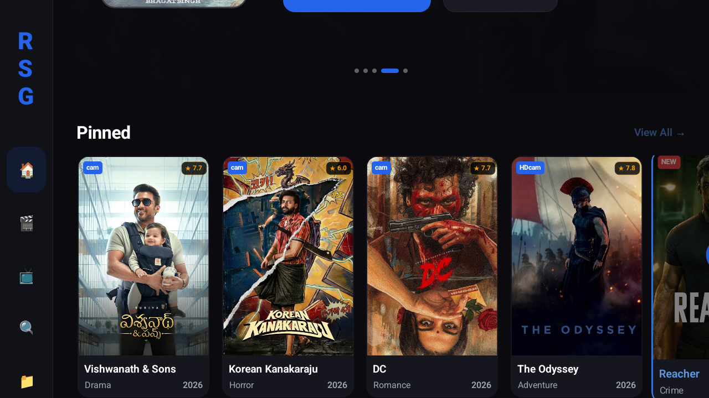
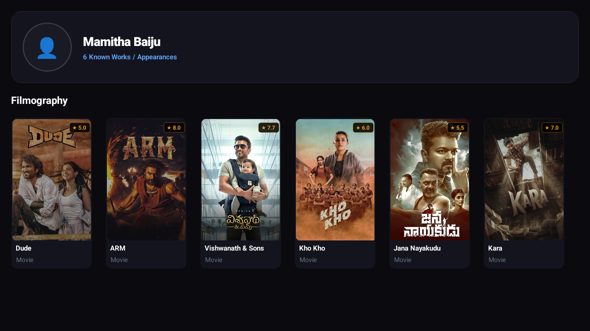
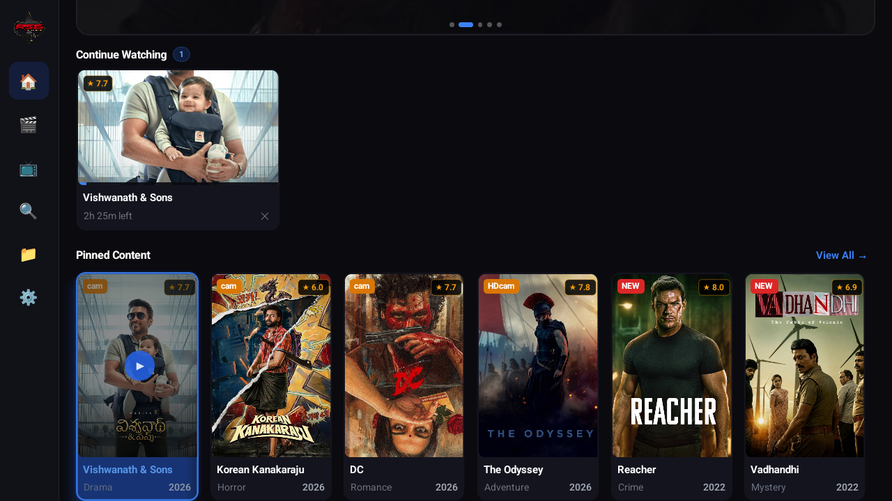
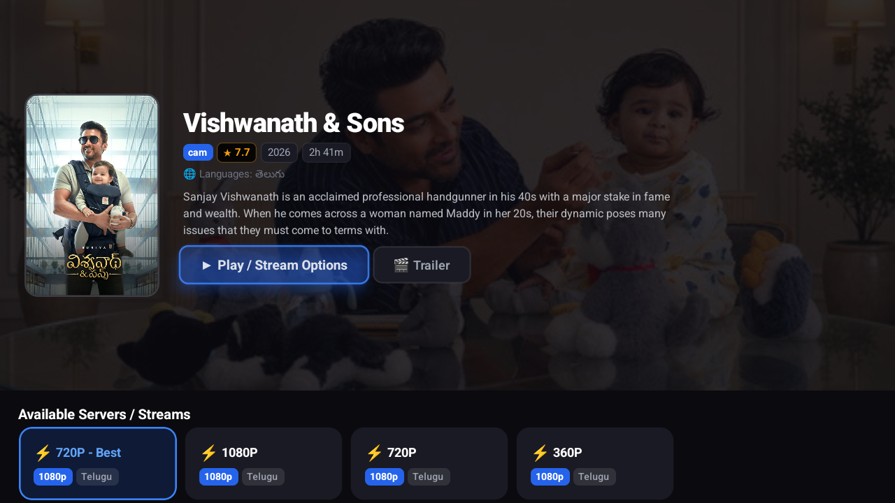
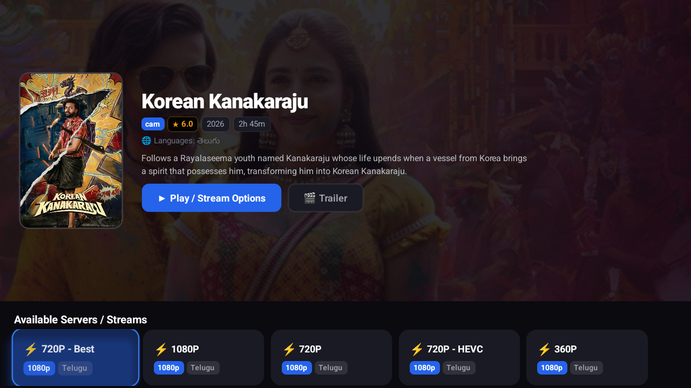

TV-Native React Native / ExoPlayer




FLAGSHIP ECOSYSTEM
Production Architecture
RSGMovies Multi-Client Streaming Platform
React Web · Django REST API · Android TV (Leanback) · Native Android
An enterprise-grade, multi-platform media discovery & streaming ecosystem engineered across web, Android TV, and native mobile. Engineered with custom D-pad spatial focus traps, HMAC-SHA256 signed backend stream proxying, QR-based Entra authentication, and real-time server session revocation.
- Cross-Platform Parity: Unified Django REST API backend powering React Web (Vite), Android TV (
react-native-tvos), and native Android. - Leanback D-Pad Engine: Spatial navigation with focus traps, auto-sliding hero carousels, and 100% remote control accessibility.
- Secure Proxy Architecture: Backend HMAC-SHA256 signature validation preventing stream tampering and direct credential exposure.
- QR Entra Authentication: TV generates an ephemeral cryptographic request token; authenticated web user approves via biometric/SSO; TV receives Bearer token.
- Single-Session Enforcement: Displaced devices are immediately invalidated with server-side session revocation (
401 SESSION_REVOKED). - In-Memory Secrets: Fallback provider tokens reside in volatile RAM only, never persisted to disk or AsyncStorage.
- Dynamic HLS Level Detection: Extracts actual bitrate levels directly from
.m3u8manifest, discarding hardcoded resolution mocks. - External Player Hand-off: Direct intent triggers for VLC, MX Player, and PotPlayer with intent payload validation.
- Intelligent Watch History: Automatically marks progress at 95% completion and persists cross-device watch positions.